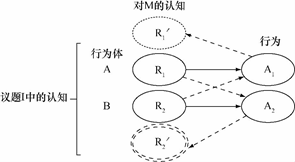
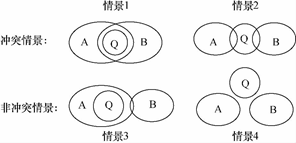

收录于合集
★
摘 要 国际关系认知理论的一个核心观点是决策者的错误知觉引发了国家间冲突， 然而， 错误知觉与冲突之间并非线性的因果关系， 传统认知理论未能对错误知觉引发冲突的具体条件做出清晰的界定。而从认知的另一个来源———身 份出发， 也许可以给出更可靠的答案，议题身份概念的提出则有助于理解错误知觉与冲突之间的关系。议题 身份是指行为体在就具体议题进行互动时被激活的身份， 代表了行为体相对于互动他者的议题认知和信念体系。行为体围绕议题展开互动， 在不同议题中具有不同的议题身份。议题身份对认知过程具有两种影 响： 一是赋予行为体在议题中的认知偏好和适当性信念， 影响错误知觉的形成； 二是确定行为体在议题中的利益。这种利益界定决定了行为体对互动议题的敏感程度， 进而构成冲突发生的条件。行为体对议题的敏感性越高， 其依据错误认知展开行动的动机就越强烈， 采取对抗性手段维护利益的可能性就越大， 因此冲突爆发的可能性也就越大。近年来中美在南海航行自由问题中的错误知觉之所以呈现出向冲突转 化的明显态势， 并有可能引发地区冲突， 其根源在于双方围绕该议题所产生的议题身份决定了互动过程中的高度敏感性。
**
**
关键词 议题身份 错误知觉 国际冲突 南海航行自由 中美关系
★
导论： 错误知觉一定导致冲突吗？
国际关系认知理论的一个核心观点认为， 决策者的错误知觉引发国际冲突， 问题是， 错误知觉一定会导致冲突吗？在罗伯特· 杰维斯等学者看来， 决策者受个体因素影响，很容易对互动对象的意图产生错误认知。错误知觉虽然是冲突产生的重要原因，但并非所有错误知觉都会导致冲突。那么， 随之而来的问题便是， 什么因素会促使错误知觉引发冲突，或者说， 错误知觉引发冲突的条件是什么？对于这个问题， 传统理论受决策者个体因素多元性和认知过程复杂性的困扰，答案充满了不确定性。它们不能确定错误知觉是什么、什么时候产生，因而未能界定出错误知觉向冲突转化的条件范围。这既使得学界在进行经验论证时充满疑惑， 也导致决策者在应对错误知觉引发的冲突时缺乏强有力的理论指导。本文将尝试回答这一长期困扰传统认知理论研究的问题。
本文认为， 决策者的认知除受到个体因素影响之外， 还受到行为体在议题中身份的影响。 议题身份 是指行为体在具体互动议题中被激活的身份， 代表了一种行为体如何认识、评价议题以及互动双方的信念体系。议题身份通过塑造 决策者认知偏好以及行为体对互动议题的敏感程度， 既影响了错误知觉的产生， 也决定了错误知觉是否向冲突方向转化。本文将以中美两国南海航行自由纷争为例展开经验论证， 之所以选择这个案例， 是因为近年来中美在南海航行自由问题上存在较为明显的错误知觉， 这与传统认知理论描述的现象基本吻合。既然错误知觉不一定导致紧张态势， 那么是什么因素促使中美之间的错误知觉转变为日趋紧张的对抗态势， 甚至产生了冲突的可能呢？ 对该案例的分析， 我们将从经验层面确定行为体的议题身份如何影响了错误知觉与国际冲突之间的转换。
本文分为四个部分 。第一部分 梳理传统认知理论对错误知觉与冲突关系的解释逻辑， 指出其存在的问题及根源。 第二部分 提出本文的理论框架。论文从行为体身份对决策者认知的塑造作用出发， 分析行为体的议题身份如何影响整个认知过程， 以及议题身份决定的行为体对议题的敏感程度如何构成了错误知觉向冲突转化的条件。 第三部分 以中美关于南海航行自由的纷争为例， 进行经验层次的论证， 并排除两种替代性解释。 最后 ， 依据相关论述， 论文归纳作结并尝试提出一些规避错误知觉向冲突转化的方法。
传统认知理论的解释与不足
国际关系中的认知指的是决策者对客观世界的看法和对他人的认识， 既表现为哈罗德和玛格丽特· 斯普劳特夫妇界定的“心理环境”， 也表现为杰维斯所关注的 “意象”。关于错误知觉， 学者们或是将其界定为人们对环境的认识与真实环境之间的差距，或是界定为行为体对互动对象的意图与行为模式的错误判定。尽管存在差异，它们本质上都指向决策者认知与认知对象真实表现之间的差距。
（一） 对错误知觉的界定与理论的不确定性
传统认知理论致力于探索决策者个体因素在行为体互动过程中的作用。决 策者受既有认知影响在互动之初便已形成一种知觉倾向， 该倾向源于他从环境中得到的经验， 由于性别、年龄、信仰、经历、情感、认知风格等方面的差异， 决策者的知觉倾向各异。这些倾向与认知相符、认知固化等机制结合起来导致了决策者的不正确推断、对结果的错误评估以及对行为体如何应对其他行为体 政策的错误判断。传统理论强调意图在认知过程中的核心地位， 并将其作为界定认知的起点。杰维斯等学者在破除理性迷思的同时， 逐步意识到行为体的差异性， 注意到行为体可能秉持不同的意象。近期学者们更是借鉴行为经济学的研究成果， 直接强调行为体异质性的意义。这一转变在使传统解释更契合现实的同时，也引出了一个更加棘手的问题，即聚合问题。 总体而言，传统解释路径有助于确定决策者的作用， 但对于理解决策者认知的影响却是不完善的。决 策者认知除受个体因素影响之外，还受到行为体身份塑造的作用。
传统认知理论的这种研究取向， 决定了其难以对错误知觉做出明确界定， 增加了理论解释的不确定性。 具体体现在三个方面：首先， 传统认知理论直接以意图为研究对象，在缺乏参照的情况下， 不可能提出一个衡量认知正确与否的标准， 对方的真实意图甚至在冲突发生之后也无法准确判定。 其次， 决策者个体因素的多元性与不可测量性意味着错误知觉产生的根源是不确定的。随着研究的扩展， 被视为认知根源的个体因素在变得更加多元化的同时依旧难以区分彼此，例如， 即使采用最新实验方法，也不能对 “愤怒”和 “恐惧”做出有意义的区分。同时， 认知过程机制的多样性 （如沟通障碍、 “双系统” 模型等） 增加了界定错误知觉生成的难度，人们难以判定哪种个体因素与过程机制导致了错误知觉。再次， 聚合问题使得从个体属性出发分析错误知觉变得更加困难。杰维斯曾指出， 认知的准确性无法判定，一个政治家的认知尚且难以确定， 毋宁说整个国家的认知了。 事实上， 聚合问题不只是指学者们界定的个体决策如何变为集体决策， 还包括各类个体因素如何聚合。国际社会中有几个互动层次 就存在多少次聚合， 这意味着意图本身以及关于意图的认知都存在无限的可能性。这种不可控性解释了为何在个体研究不断推进的同时， 学界对个体特性和偏见如何聚合的研究甚少。 而这又进一步佐证了相关学者认为建立以个体作为主要行为体的自下而上的理论非常困难的观点。
上述不确定性导致了一系列问题， 包括错误知觉是什么、什么时候产生、会造成什么样的结果都是无法判定的， 因而， 也就有了将错误知觉的来源或生成机制视为错误知觉本身的奇怪现象。由于错误知觉本身尚难以被清晰界定， 学者们也就难以对错误知觉是否以及如何导致冲突等问题做出回答， 这显然是传统认知理论的一个先天缺陷。
（二） 关于错误知觉与冲突之关系的既有解释
传统认知理论的不确定性带来了严重的分析困难， 学者们不得不耗费大量精力去应对不断涌现的新变量的挑战，而对认知结果的关注却十分有限。也就是说， 心理学研究路径虽描绘了一系列偏见，但是没有具体指出这些偏见在什么时候、以何种方式显现其重要性。 在此背景下， 已有研究大致得出两个论点： 一是承认错误知觉是导致冲突的重要原因。一些学者直接假定了二者的因果关系，并在此基础上构建了具体的解释模型。 另一些学者则尝试从理论和经验层面对假设加以验证。二是承认二者的关系是非线性的， 认为错误知觉并不一定导致冲突行动。 但受不确定性影响， 学者们未能就冲突产生的条件做出充分论述。 对此当前主要存在两种解释：一种解释认为冲突与错误知觉的类型有关， 某些类型的错误知觉更容易导致冲突。如杰克· 李维认为， 与其他错误知觉相比，因低估敌方能力和第三方干预的能力和可能性而产生的军事自负最有可能导致战争。杰维斯在后续研究中接受了阿瑟·斯坦的批评， 虽然承认错误知觉与冲突的非线性关系，但与李维相似， 他也认为，在各类错误知觉中， 高估或低估对方敌意最有可能导致冲突。鉴于知觉的不可测量性以及错误知觉类型的多样性， 杰维斯放弃了给出确定性结论的努力， 而是依据两次世界大战经验， 描述了两种有待验证的冲突模型。 这种分类思维一直延续至今。 理查德· 赫尔曼认为， 人们依据情感偏好判定国家的防卫性和进攻性， 并且事后倾向于原谅喜欢的国家而惩罚不喜欢的国家。这种分类路径证实了错误知觉与冲突的相关性，然而 “错误知觉在何种条件下会引发冲突” 并不能通过回答 “何种错误知觉更容易引发冲突” 来加以解决。此外， 既然相关学者承认其他类型的错误知觉也存在引发冲突的可能性， 那么他们强调的特定错误知觉类型便不能代表整体， 因而也不可能确立预想的错误知觉向冲突转化的条件范围。事实上，要对该问题作出回答， 就必须避免分类，将不同类型的错误知觉视为整体， 进而分析它与冲突的关系机制。另一些学者则认为，错误知觉只有在特定的条件下才会导致冲突。心理因素在许多冲突案例中是常量，因此不能解释政策变化，需要通过相关方法确定其影响决策的条件范围。例如， 阿瑟·斯坦认为， 错误知觉并不总是发挥作用， 它只在有限的环境下 （行为体利他、相互依赖、变和博弈等）才会影响行为体的选择和决策结果。一旦行为体有了主导性战略， 认知便是无关紧要的。错误知觉不一定导致冲突， 有时还会促进合作。埃里克·格里纳维斯基认为完全的信息导致战争， 他论证了错误知觉导致合作的条件， 即双方对互动内容存在不同的解读， 并且双方都做出重要让步。
就本文的研究主题而言，相关研究仍然存在一定的局限。它们都证实了错误知觉向冲突转化存在偶然性， 但斯坦界定的主导性战略虽可以作为认知是否起作用的指标， 却不足以作为错误知觉向冲突转化的条件。而格里纳维斯基研究的主题是界定错误知觉如何导致合作， 而不是考察错误知觉向冲突转化的条件范围。不过， 此类研究开启了另一种思路。他们将不同类型的错误知觉作为一个整体展开分析， 一定程度上避免了前一种路径的缺陷， 尤其是注意到环境或结构对决策者的限制， 启示人们要重新思考决策者认知的来源。因而， 本文很大程度上拟依循这一思路展开进一步探索。
议题身份、错误知觉与国际冲突
本文的核心目标是厘清错误知觉与冲突之间的关系。鉴于传统认知理论面临的分析困境，本文首先将从行为体身份的塑造作用出发， 重新界定决策者的认知（错误知觉）， 在此基础上进一步阐明错误知觉向冲突转化的条件范围。
（一） 议题身份、互动议题与错误知觉
决策者认知形成存在两个根源： 个体因素和行为体身份（外在环境）， 因而， 在此基础上存在两种研究路径： 一是强调个体因素。传统认知理论遵循的这种由内而外的研究路径体现的是相关性逻辑， 变量的多元性和过程的复杂性导致结果的不确定性， 难以对错误知觉与冲突之间的关系做出有效界定。二是强调行为体身份的塑造作用。 建构主义认为身份与适当性逻辑联系在一起， 塑造了行为体的认知偏好， 而整体主义则认为， 个体属性取决于整体对其进行的塑造， 也即决策者在特定议题中的认知受到其所属集团的身份的塑造。
行为体身份与互动议题密切相关， 本文在借鉴议题领域现有成果的基础上提出议题身份的概念。 议题身份是指行为体在具体互动议题中被激活的身份， 代表了行为体相对于互动他者的议题认知和信念体系。 首先， 行为体身份是在具体议题领域的社会互动中形成的。社会认同理论认为，行为体的身份， 即对 特定群体的类属知识、情感和价值的认同， 是行为体通过对照自身特质与社会分类标准的自我分类过程获得的， 而这些分类标准源于参与社会互动的各行为体在议题领域中的总体性差异 （与个体间差异相对应）。 行为体身份的两个来源都是指向具体议题领域的， 即与议题有关的行为体属性与所属集团 （内在和外在结构）。由此建构起的行为体身份通常只适用于特定议题领域， 其本质上就是议题身份。 其次， 议题身份是行为体多重身份的表现形式。建构主义界定了身份的两种可能存在方式： 一是身份结构，即一些身份比另一些身份更具有根本性意义， 具体表现为单一身份解释，如依据权力界定的等级身份解释国家的各类行为， 该界定会导致诸如 “作为医生我会履行作为父亲的责任” 这样的谬误。二是认为身份的激活是有选择性的， 是由行为体当时所处的环境决定的。议题身份的概念与该分析逻辑相一致， 议题领域构成了激活相关身份的环境。行为体的多重身份并不是杂乱无章的综合， 而是围绕议题的有序排列。国家间互动类似于不同舞台剧 （议题身份）在各个舞台 （议题领域） 同时上演， 而非同一舞台剧同时出现在各个舞台上。舞台决定角色，议题领域决定行为体激活的身份类型。最后， 议题身份对认知过程具有两种影响：一是赋予行为体在议题中的认知偏好和适当性信念， 影响错误知觉的形成。二是确定行为体在议题中的利益。这种利益界定决定了行为体对互动议题的敏感程度， 进而构成了冲突发生的条件。
在互动议题中，行为体的身份差异影响了错误知觉的产生。行为体的议题身份作为一套信念体系构成了决策者获取外部知识的重要来源， 进而塑造了行为体的认知结构。虽然认知结构的外围因个体因素不同而存在差异， 由行为体身份塑造的核心认知却是稳定的。 这些核心认知作为共有知识， 塑造不同决策者的认知偏好，构成其解释互动议题的棱镜。身份的差异性决定行为体对事物的认知存在明显区别，即使在同一制度内对同一问题的认识也是不同的， 最典型的便是小国与大国对同一事物的认识经常是不同的。与此同时， 行为体通过解读既有规范或利用规范中的“情境逃离条款（ｓｉｔｕａｔｉｏｎａｌｅｓｃａｐｅｃｌａｕｓｅ）” 将自己的偏好与适当性联系起来。在此基础上，错误知觉即产生于认知偏好的 “两次折射”： 首先， 行为体以自己认为适当的方式解读议题， 并拒绝承认他人通过其他方式合理的观察。人们容易认为对方的信念存在偏见， 却不容易接受自己可能存在同样的错误。其次， 当行为体依据自己的偏好判定对方做出 “不适当”行动后， 便会依据自己的偏好解读出对方的 “意图”。
传统认知理论直接关注行为体对意图的认知， 意图的不可测量性决定了认知的不可测量。 在引入议题变量以后， 决策者认知首先是对议题的认知，在此基础上才会形成对互动中另一方的认知。议题本身以及决策者对议题的认知都 不存在正确与错误之分， 但它们却共同构成了界定错误知觉的参照物。如图－１所示， 行为体身份差异赋予决策者不同的认知偏好， 行为体 Ａ、Ｂ 的决策者在议题Ｉ中对事物Ｍ 分别产生认知Ｒ１、Ｒ２， 及相应行为Ａ１、Ａ２。以自己对议题的解读为参照， 双方推断出对方的意图 Ｒ′１ 、Ｒ′２ 。当身份相同时， 它们对议题的认知 （Ｒ１、Ｒ２） 几乎是一致的，Ｒ′１ 与 Ｒ′２ 是接近重合的， 此时不存在错误知觉。当身份存在差异时，决策者依据自身的认知偏好对互动对象所采取行为的认知，与对方关于自身行为的认知是不相符的，Ｒ′１ 与 Ｒ１以及 Ｒ′２ 与 Ｒ２不再重合， 对议题的认知差距转变为意图与现实的差距，即错误知觉。因此， 错误知觉可以理解为行为体在认知偏好存在差异的情况下以自己的认知偏好判断对方行为。基于议题参照， 判断错误知觉的有效方法是判定双方对互动议题的认知差距。
当行为体的议题身份相同时， 个体 （精英） 属性仍可能导致错误知觉产生， 但是议题身份导致的错误知觉更为重要。 一方面，议题身份塑造的认知是集团认知， 与集团 （国家与国际组织） 作为国际社会中主要行为体的现实一致。个体属性需要通过聚合作用才能解释集团行为， 然而， 个体异质性与聚合在是否存在共同认知上是相互矛盾的。如果承认聚合作用的存在，那么个体异质性必然是相对的， 因为聚合具有与规范相似的累积性，新的聚合产生于已有聚合建构起的共同认知的基础上。议题身份通过将对异质性的分析提升至集团层次避 免了上述问题， 集团异质性构成了行为体身份的基础，而身份赋予集团内部的共有知识构成了个体属性实现聚合的基础。身份引发的认知差异要比个体属性引发的认知差异更为显著。例如， 东盟各国领导人存在明显个体差异， 但在对亚洲金融危机的认知上， 却采取了一种与西方不同的共同立场。 另一方面，基于个体属性基础上的认知发挥作用依赖于集团身份。当双方整体认知偏好相似， 仅由个体属性引发的错误知觉会很快得到解决。在认知聚合过程中，当决策者个体属性塑造的认知与集团认同体现的社会总体偏好相抵触时， 决策者认知将被视为 “不适当” 而面临高昂的观众成本。并且，与前景理论关于损失和收益的敏感性界定相类似， 人们对违背规范的敏感程度要高于遵守。集团的议题身份构成了认知聚合的基础， 只有在与总体偏好一致的情况下， 作为常量的决策者个体属性的意义才能显现出来。

图－１ 错误知觉判定方法
（二） 错误知觉向冲突转化的必要条件：议题身份与敏感性
鉴于冲突在不同议题中有多种形态， 本文将其界定为各个议题领域中的行为体之间寻求强制对方的对抗性状态， 既包括安全议题中的战争，也包括经济议题中的恶性竞争 （如贸易战）等。 冲突的烈度呈连续状分布， 如贸易战中从局部性到全面性的关税壁垒。当互动双方在相关议题中产生错误知觉以后， 错误知觉与冲突之间并非是线性的因果关系。行为体既可能高度重视并将该认知付诸行动， 也可能忽略该认知，不做回应。这一部分尝试回答的问题是， 何种因素导致决策者如此重视该错误认知。
行为体在议题中的身份决定了其对议题的敏感程度。议题身份的第二项功能是塑造行为体在互动议题中的利益界定。利益是以身份为先决条件的。身份不仅塑造了行为体界定利益的方式， 还塑造了其对利益范围的划定。行为体对议题的敏感程度是指行为体是否将互动议题视为关系到自己的生存发展， 体现为行为体对议题的关注程度。行为体对互动议题的敏感程度， 本质上反映的是其对互动议题的利益解读。行为体从自己在议题中的身份出发， 认为自己在互动议题中的利益越重要，它对该议题的敏感程度就越高。议题敏感性在以下方面影响了行为体的行动：首先， 行为体对议题敏感程度决定了其采取行动的可能性。敏感程度越高， 行为体依据错误认知展开行动的动机越强烈。敏感性引发了一种与 “双系统” 模型中强调直觉性的“系统１” 类似的心理紧迫感， 如果不依据错误认知采取行动， 自己界定的重要利益将可能受到威胁。 其次， 行为体对互动议题的敏感性越高， 越倾向于将对方解读为进攻性的。行为体在这种内部情感指引下， 通过选择性接收和解读外部信息确立一种对抗信念， 即 “敌人” 意象。最后， 行为体对议题的敏感性较高时， 行为体是风险偏好的。敏感 性较低时， 行为体是风险规避的。行为体敏感性越高， 其承担风险意愿越强， 越愿意采取对抗性手段维护利益。
互动双方对议题的敏感性差异决定了冲突产生的可能性。身份差异导致行为体对利益界定的差异， 进而对议题表现出不同的敏感程度。 借鉴异质性研究成果， 行为体围绕特定议题的不同敏感性组合会导致不同的结果。③ 大致存在四种情景， 如图－２ 所示： 当互动双方（Ａ、Ｂ） 都将议题Ｑ 界定为核心利益， 并表现出高度的敏感性时， 双方都倾向于依照自己的错误知觉展开行动， 错误知觉最有可能引发冲突。当双方都将互动议题解读为重要利益而表现出较高敏感性时，冲突产生的可能性较大， 但已经存在较大的妥协空间， 冲突的烈度也较低。当仅有一方对互动议题高度敏感时， 由于另一方的关注程度有限， 且存在大幅度单方面妥协的空间， 因而冲突产生的可能性很小。如在沃马克论述的不对称关系中， 小国与大国之间的敏感性不对称是常态， 但冲突很少发生，大国通常愿意在那些自己不敏感的议题上向小国让步以应对与其他大国的不对称关系， 发生不对称冲突恰恰是因为大国对议题表现出较高敏感性。当双方都不认为议 题事关自身利益而不太敏感时， 错误知觉不会导致冲突， 有时甚至会促进合作。鉴于议题联系战略的存在， 双方愿意通过在此议题中的合作以巩固在其他议题中应对第三方的联盟。

图－２ 错误知觉与冲突爆发
行为体的议题身份是处于变化当中的。一方面，行为体在不同议题中的身份是不同的， 有时候可能是一些议题的主导者，而在另一些议题中则是参与者。另一方面，特定议题中的行为体身份在持续的互动过程中是变化的。 尽管身份具有一定的稳定性，但身份的社会属性则推动其不断重构， 国家通过学习等方式确立起新的身份认同。社会身份理论并没有排除这种可能， 并且强调了团体身份的可塑性。如在地理位置未变的情况下， 中国的地缘身份经历了从陆权到半海洋性的转变。 议题身份的变化导致行为体对议题敏感性的变化， 原来高度敏感的议题可能不再敏感，原来不敏感的议题也可能变得高度敏感。因而， 图－２ 中表述的四种敏感性组合呈连续性分布， 并随着议题身份的变化而相互转化， 具体在本文案例中， 则体现为中国半海洋性身份建构使得南海航行自由争端由缓和到加剧的转变。
综上所述，行为体的议题身份影响了整个认知过程。议题身份塑造了决策者认知偏好，影响了错误知觉的产生。同时， 议题身份决定了行为体的利益界定， 行为体对不同议题的敏感程度不同。错误知觉与冲突的非线性关系与行为体对互动议题的敏感性差异相关。只有当行为体对互动议题都表现出高度的敏感性时，错误知觉才会向冲突转化。
**
**
未完待续
文章来源： 《外交评论》2017年第5期
筛选：凌羽 编辑：米金金